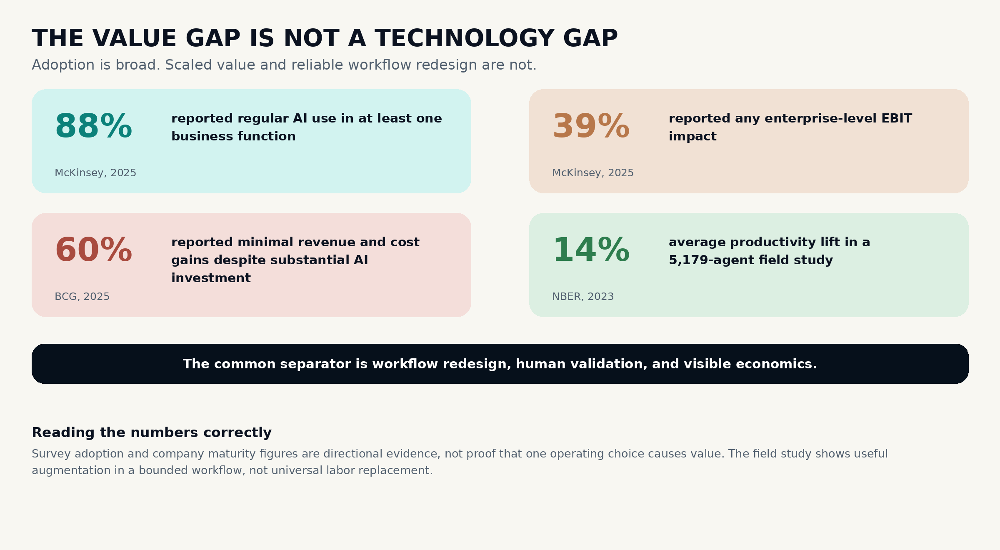
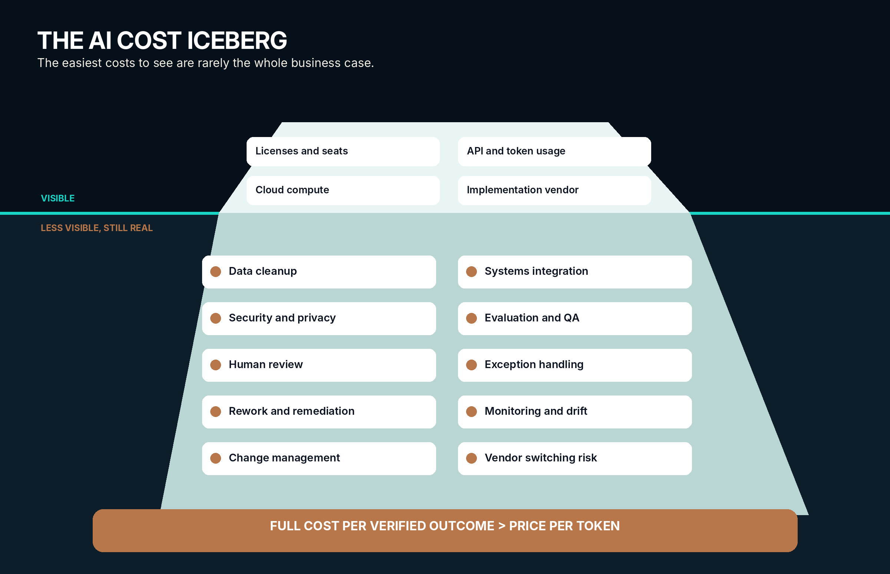
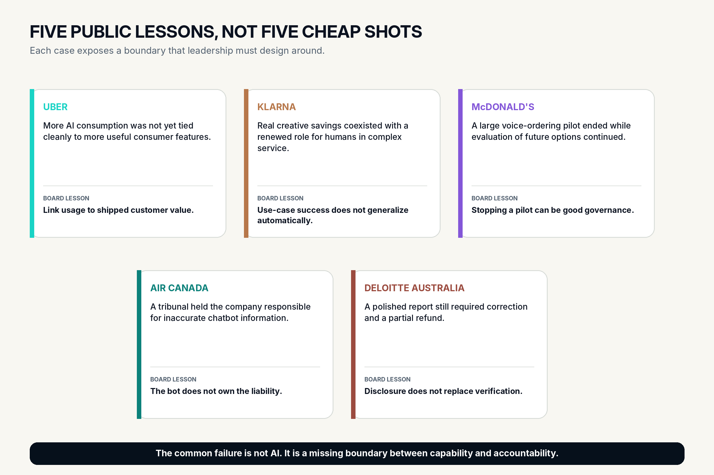
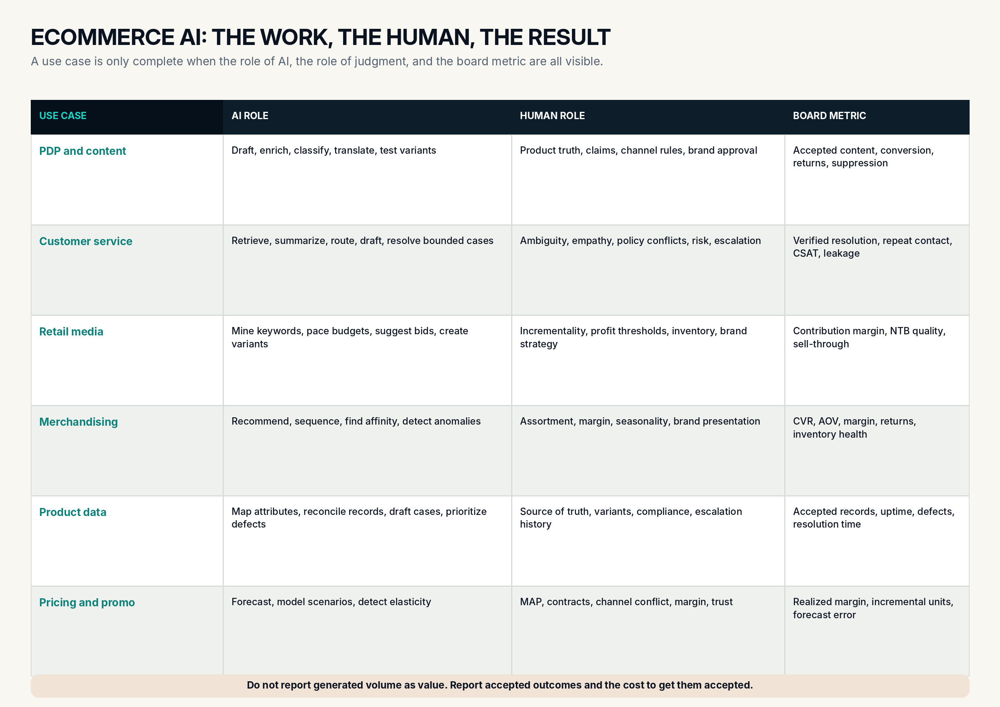
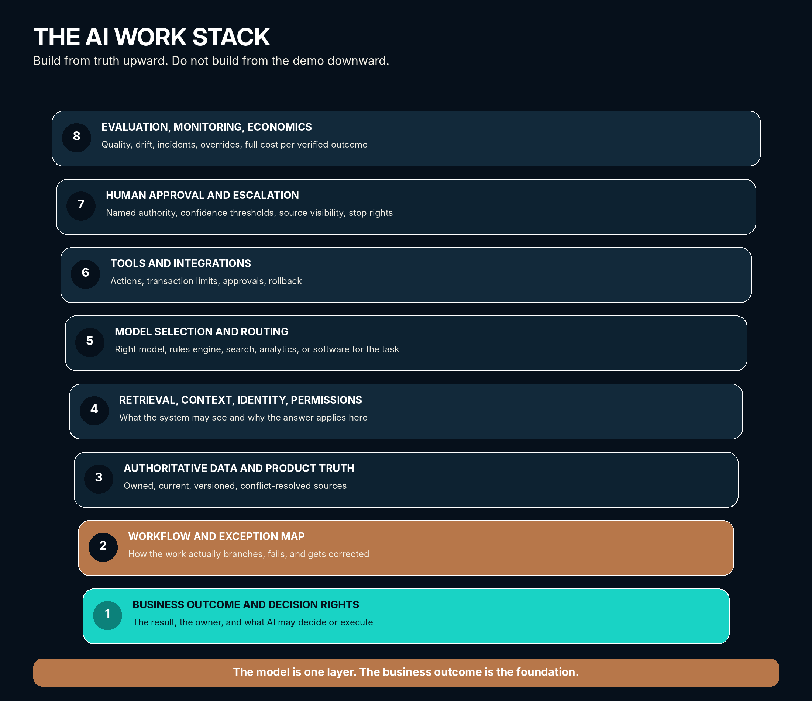
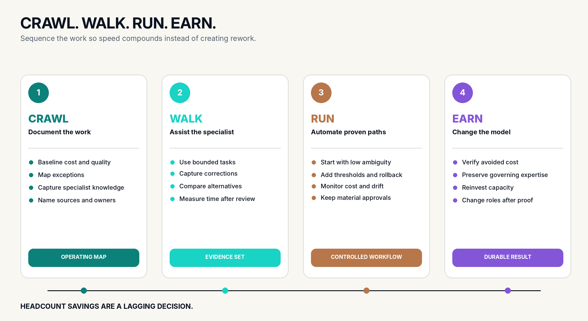
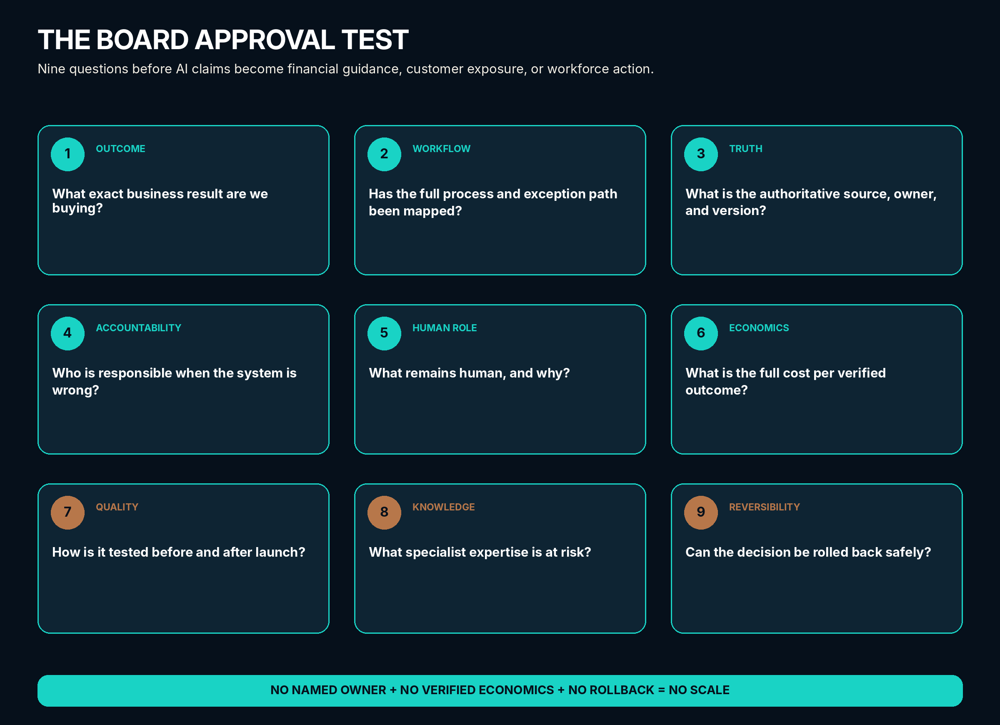

Research and authorship note
Artificial intelligence was used heavily in the research, source organization, editing, visualization, and beautification of this paper. The ideas, point of view, voice, judgments, original frameworks, and practical work presented here are Sudeep Arya's. This paper was reviewed and published with his final authorization.
AI helped build the paper. It did not choose, own, or approve the position.
All factual claims are grounded in the public sources listed at the end of the paper. Corporate examples are used to examine operating patterns, not to assign intent, attack individual executives, or label an entire company as a failure. Companies learn. Pilots change. Operating models evolve. That is part of the point.
For this publication release, every material factual claim was traced to a primary source where available and to established reporting where a primary record was not practical to access. Company savings are identified as company-reported. Forecasts are identified as forecasts. Consultancy surveys are used as survey evidence, not as causal proof.
The goal of this paper is practical: help boards and executive teams separate real AI transformation from expensive activity that looks like transformation.
Research current through July 10, 2026.
1. A note from the operator's side of the table
I am pro-AI. That needs to be clear before we go any further.
I am not writing this because AI does not work. I am writing it because it does work, which makes poor leadership around it more expensive.
I have spent more than two decades working where commerce strategy, technology, data, marketing, operations, agencies, and customer experience collide. That includes Amazon, DTC, marketplaces, retail media, Shopify, enterprise commerce platforms, analytics, product data, integrations, and the workflows that connect all of them.
From that seat, the pattern is hard to ignore.
Companies are often running before they can crawl. They announce an AI ambition before they can explain the workflow. They buy the tool before they clean the data. They calculate headcount savings before they count exceptions. They call specialist review a bottleneck before asking what that specialist has been preventing from going wrong.
Then the bill arrives in pieces.
It shows up in model usage, cloud, APIs, consultants, security reviews, data cleanup, integration, rework, customer escalations, legal questions, vendor overlap, and the quiet return of human labor to repair what was supposed to remove human labor.
The technology gets blamed for decisions the technology never made.
That is not an argument to slow AI until it becomes harmless. It will never be harmless, because no material business system is harmless. It is an argument to lead it like a system instead of presenting it like a purple unicorn.
A purple unicorn is the answer to every problem. It writes. It codes. It sells. It forecasts. It serves customers. It replaces software. It replaces people. It cuts cost. It creates growth. It never sleeps. It somehow becomes cheaper as everyone uses more of it.
A system is less exciting and far more useful.
A system has an outcome. It has a source of truth. It has inputs and permissions. It has failure modes. It has a cost to run. It has an owner when it is wrong. It has a human escalation path. It is tested against real work, not a clean demonstration.
Boards do not need to become model engineers. They do need enough operational literacy to know which one they are being sold.
Editing JSON is not a qualification for leadership. Not understanding the stack is not an exemption from accountability.
2. The board-level thesis
AI adoption is widespread. Enterprise value is not.
McKinsey's 2025 global survey found that almost all respondents reported AI use somewhere in their organizations, but nearly two-thirds had not started scaling it across the enterprise. Only 39 percent reported any enterprise-level EBIT impact. The companies seeing the most value were more likely to redesign workflows, pursue growth and innovation alongside efficiency, and establish clearer human validation. [1]
BCG found a similar divide. Its 2025 study placed only 5 percent of companies in a future-built category, 35 percent in a scaling category, and 60 percent in a group reporting minimal revenue and cost gains without the capabilities needed to scale. BCG's central observation was not that leaders bought better software. It was that they reshaped how the business worked. [2]
KPMG's Q2 2026 Global AI Pulse described the market moving from deployment toward accountability, AI economics, and value realization. Established ROI remained limited, and leaders increasingly recognized that scaling AI is a people, workflow, operating, and economic discipline. [3]
This is the thesis of the paper:
That standard is not anti-automation. It is how automation becomes durable.
The board question is not, "Are we using AI?"
The board question is, "Where are we earning from it, and what has to remain true for that value to continue?"
Five conclusions for directors
1. Usage is not value. Tokens, prompts, seats, generated assets, and automated conversations are activity measures. They are not accepted business outcomes.
2. Headcount savings are a lagging decision. They should follow sustained workflow proof, not appear in the business case before the workflow is rebuilt.
3. Specialist knowledge is an asset. In many processes, the specialist is carrying undocumented rules, exceptions, context, and judgment. Removing the person can remove the data the AI still needs.
4. The cheapest model can create the most expensive workflow. Price per token means little without accuracy, review time, rework, escalation, and customer impact.
5. Boards need a full cost per verified outcome. AI economics should be measured against work accepted without material correction, not against raw generation volume.

3. The purple unicorn problem
The pressure to appear ahead of AI is real.
No CEO wants to explain why the company missed a platform shift. No board wants to discover that competitors learned faster. No executive wants an AI program to look cautious while another company is announcing agents, automation, and workforce efficiency.
That pressure can create a dangerous substitution. The company replaces evidence of value with evidence of motion.
A new AI council is formed. A vendor is selected. Licenses are distributed. A dozen use cases are announced. A slide estimates hours saved. Another slide converts those hours into headcount. The forecast looks clean because the exceptions are not in it.
The first mistake is treating AI as a product category instead of a change to the way work is performed.
The second mistake is allowing the tool to define the use case.
The third is rewarding the announcement before the operating proof exists.
This is where incentives matter. I am not suggesting every executive is chasing a bonus or protecting a pay scale. I am saying that organizations often reward visible transformation faster than they reward the difficult work of mapping processes, cleaning data, preserving expertise, measuring defects, and declining a use case that does not earn its cost.
That imbalance can produce a poor form of capitalism. Labor is treated as the obvious cost to remove while technology cost is treated as strategic investment, even when the technology cost is recurring, variable, hard to see, and dependent on the labor that remains.
The result is a cost transfer, not always a cost reduction.
Payroll moves into cloud consumption. Internal expertise moves into consulting. Stable software moves into metered APIs. A known team becomes a chain of vendors. A visible salary becomes a less visible mix of token usage, orchestration, data engineering, security, evaluation, and remediation.
Sometimes that trade is excellent. Sometimes it is necessary. Sometimes it creates new growth that no headcount comparison could capture.
But it is not automatically efficient because the invoice is categorized as technology.
The signs of running before crawling
A company may be running before crawling when:
- Labor savings are booked before baseline quality and exception rates are measured.
- Success is reported in seats, prompts, tokens, agents, or generated outputs.
- The vendor is defining the process instead of fitting into a documented process.
- Specialist reviewers are described as resistance or bottlenecks.
- Rework and escalations are excluded from ROI.
- Every workflow is suddenly described as an agent opportunity.
- No one can show the authoritative knowledge source behind the answer.
- Costs are scattered across technology, marketing, cloud, consulting, and business teams.
- The executive sponsor cannot explain what happens when the model is wrong.
- The organization has a launch plan but no retirement, rollback, or vendor-switching plan.
Gartner forecast in 2025 that more than 40 percent of agentic AI projects would be canceled by the end of 2027 because of escalating costs and unclear value. That is a forecast, not a completed outcome, but it is directionally important. Gartner also warned that many products were being relabeled as agents without meaningful agentic capability. [14]
A board does not need to reject ambition. It needs to refuse a business case that confuses ambition with proof.
A pilot that stops is not a failure. A pilot that cannot stop is.
4. AI is real. So is the bill.
The AI cost conversation is usually too narrow.
Leaders are shown license fees, model rates, or a cost per million tokens. These numbers are useful. They are not the full cost.
A company is not buying a finished digital employee. It is leasing access to probabilistic capability and surrounding it with enough context, software, controls, and human judgment to make it useful.
That surrounding system is where much of the bill lives.
KPMG's Q2 2026 work frames the next phase of enterprise AI around accountability, AI economics, and value realization. That shift matters because production makes costs visible that demonstrations can hide: usage, monitoring, review, integration, exception handling, and rework. [3]
That does not mean the technology is losing value. It means the economics become more visible as companies move from demonstrations to daily use.
A demonstration is cheap because it is narrow.
Production is expensive because the business is not.
What the invoice does not show
The visible line items are familiar:
- Model licenses and enterprise seats
- API calls and token consumption
- Cloud compute and storage
- Vendor subscriptions
- Implementation services
The less visible costs are often larger:
- Cleaning and normalizing data
- Connecting ERP, PIM, DAM, CRM, OMS, WMS, marketplace, and analytics systems
- Building retrieval, permissions, and identity controls
- Testing prompts, models, tools, and edge cases
- Security, privacy, legal, and compliance review
- Human approval and quality assurance
- Handling exceptions and escalations
- Reworking incorrect or unusable outputs
- Monitoring drift, vendor changes, and model updates
- Training teams and changing roles
- Preserving an exit path when the vendor, price, or model changes
The board should expect AI cost to move as usage expands. A tool used occasionally by a pilot team behaves differently from a tool embedded in every customer conversation, product record, campaign, developer workflow, or decision path.
There is also a basic measurement problem. A million tokens is not a business outcome. Ten thousand chats is not ten thousand resolved customers. Five hundred product descriptions is not five hundred approved, compliant, high-converting product pages.
In May 2026, Uber's president and chief operating officer publicly questioned the connection between rising AI token consumption and useful consumer features. The issue was not that people were failing to use AI. It was that the company could not yet draw a clean line from more consumption to more customer value. [8][9]
That is the right question.
Full cost per verified outcome
I propose a simpler economic unit for boards:
FULL COST PER VERIFIED OUTCOME
=
Licenses + usage + cloud + data + integration + security + monitoring + human review + exception handling + rework + change management + switching risk
DIVIDED BY
Business outcomes accepted without material correction
The denominator matters more than it looks.
If an AI system generates 10,000 outputs and 7,000 require meaningful human correction, the system did not deliver 10,000 outcomes. It delivered 3,000 accepted outcomes and 7,000 review events.
The review events may still have value. The AI may have accelerated a first draft, reduced search time, or helped a specialist move faster. That is real augmentation. It should be measured as augmentation, not quietly converted into a claim that the specialist is no longer needed.
A practical ROI equation
AI NET VALUE
=
Incremental gross profit + verified avoided cost
MINUS
Full run cost + error and remediation cost + opportunity cost
The phrase "verified avoided cost" is deliberate.
Avoided cost is not the salary of every person whose task appears in a workflow diagram. It is the cost that actually disappears after the new process is stable, including the cost that returns through contractors, reviewers, escalations, and recovery work.
NIST notes that training, maintaining, and operating generative AI systems are resource-intensive and that the footprint varies by model activity, hardware, content type, and task. The board does not need to price the global infrastructure build. It does need to treat production AI as an ongoing operating system, not a one-time software purchase. [6]

5. The specialist was the system
One of the easiest mistakes in AI transformation is looking at a repetitive task and assuming the person performing it is repetitive too.
The visible work might be entering attributes, answering tickets, reviewing copy, adjusting bids, resolving listing errors, approving promotions, checking claims, or matching inventory to channel demand.
The invisible work is knowing when the standard rule does not apply.
That knowledge is rarely stored in one place. It lives in emails, meetings, spreadsheets, vendor notes, policy updates, legal interpretations, customer history, platform quirks, and memory. The specialist often carries the map of exceptions because the organization never built one.
When leadership removes the specialist before capturing that knowledge, it does not modernize the workflow. It deletes part of the system.
This is why the NBER study of 5,179 customer support agents is so important. AI assistance increased productivity by 14 percent on average, with a 34 percent improvement for novice and lower-skilled workers and minimal impact on the most experienced workers. The researchers found evidence that the system helped spread the best practices of more capable workers. [4]
Read that carefully.
The AI helped because expert practice existed to learn from and distribute.
The experienced worker was not proof that the AI had no value. The experienced worker was part of the value chain.
A board should ask:
- Whose judgment is embedded in this system?
- Who decides what a correct output looks like?
- Who identifies the exception the training set missed?
- Who updates the process when policy, assortment, pricing, law, or customer behavior changes?
- What happens to that knowledge if the role is eliminated?
Fluency is not authority
General-purpose AI is very good at producing language that sounds complete. That is useful and dangerous.
A model can synthesize patterns from a broad and uneven information environment. That environment may include strong research, professional documentation, marketing pages, forums, opinion, outdated material, and social platforms such as Reddit. Fluency across that material is not the same as authority inside your company.
Your approved product claim is not the average answer on the internet.
Your return policy is not a general retail convention.
Your MAP rules, assortment logic, contractual obligations, marketplace escalation history, inventory lead times, promotional exclusions, and legal approvals are not guaranteed to exist in public data at all.
Replacing an accountable specialist with a system grounded mainly in broad public material is knowledge dilution unless the company builds its own source of truth, permissions, retrieval layer, evaluation process, and named accountability.
NIST's Generative AI Profile treats trustworthiness as something that must be incorporated into design, development, use, and evaluation. It highlights risks including confident falsehoods, over-reliance, information integrity, and problems created by the way components are connected across the AI value chain. [6]
The Harvard Business School study on the "jagged technological frontier" makes the operating problem even clearer. In tasks inside AI's capability frontier, consultants using AI completed more work, moved faster, and produced higher-quality results. On a complex task outside the frontier, AI users were 19 percent less likely to be correct. [5]
The same tool can be excellent and wrong inside what looks like the same workflow.
That is why "human in the loop" cannot be a decorative phrase. The human must have the expertise, authority, time, and incentives to stop the system.
AI can reproduce the average answer. Your specialist is often paid for the exception.
The wrong headcount sequence
The wrong sequence is:
- Buy AI.
- Estimate task automation.
- Remove roles.
- Discover exceptions.
- Hire contractors or rebuild the team.
The stronger sequence is:
- Identify the business outcome.
- Map the work and its exceptions.
- Capture specialist judgment.
- Let AI assist the specialist.
- Measure accepted outcomes and error cost.
- Automate proven paths.
- Reconsider roles only after sustained evidence.
The second sequence may feel slower in the first quarter. It is usually faster than repairing an operating model after customer trust, data quality, or specialist knowledge has been damaged.
6. What five public AI cases teach us
Public AI stories are often presented as victory or failure. That is too simple.
The useful question is what each case teaches about workflow, economics, accountability, and human design.
Uber: consumption is not a customer outcome
In May 2026, Uber president and chief operating officer Andrew Macdonald said the company could not yet draw a direct line between rapidly rising token consumption in coding tools and a comparable increase in useful consumer features. He also said the company would need to compare token cost with headcount. [8][9]
The lesson: AI activity must be connected to shipped value. Developer adoption, generated code, or token use can be leading indicators, but the board still needs the line to reliability, release speed, customer benefit, revenue, or avoided cost.
Klarna: one success does not validate every use case
Klarna reported meaningful AI savings in 2024, including lower image-production and external marketing costs, more campaigns, and a shorter creative cycle. It also promoted a customer-service assistant that it said performed work equivalent to hundreds of agents. [10]
By late 2025, Reuters reported a more balanced customer-service model at Klarna. Routine issues could be handled by AI, while complex cases moved to humans, and people remained a substantial part of the service mix. [7]
The lesson: AI can be highly valuable in bounded production tasks and still need a different operating model in complex, emotional, or exception-heavy service work. A win in image generation is not proof that the same labor strategy belongs in customer resolution.
McDonald's: a stopped pilot can be good governance
McDonald's ended its IBM automated drive-through ordering test in 2024 after a multiyear test at select locations and public reports of mixed results. The company did not reject voice AI. It continued evaluating future options. [11]
The lesson: a pilot should answer a question. Ending one implementation while continuing to learn is not anti-innovation. It is what pilots are for. The governance failure would be scaling because the announcement had already been made.
Air Canada: the bot does not own the liability
In Moffatt v. Air Canada, a British Columbia tribunal found the airline responsible after its website chatbot gave incorrect information about bereavement fares. The decision rejected the idea that the chatbot could be treated as a separate actor. It was part of the company's website, and the company remained responsible for its accuracy. [12]
The lesson: accountability does not move into the model. The customer experiences one company, not a collection of web pages, vendors, prompts, and disclaimers.
Deloitte Australia: polished output is not proof
In 2025, Deloitte Australia agreed to partially refund a government payment for a report containing incorrect references and an apparent fabricated quotation. A revised version disclosed the use of Azure OpenAI. Deloitte confirmed that some footnotes and references were wrong, while the government said the report's core recommendations remained unchanged. [13]
The lesson: professional-looking output can carry unprofessional verification. AI disclosure is important, but disclosure does not replace review. The more authoritative the document appears, the stronger the validation must be.
What these cases have in common
None proves that AI failed as a technology.
Each shows a boundary that leadership has to design around:
- Usage without outcome linkage
- Cost reduction without quality protection
- Automation without sufficient exception handling
- Customer-facing output without clear accountability
- Professional output without professional verification
The companies that learn these lessons publicly are not uniquely careless. They are visible examples of a broader market moving from excitement into operating reality.
Reuters reported in December 2025 that only a minority of executives in several surveys were seeing improved margins or widespread value from AI. The same report described companies learning that domain-specific work requires encoded knowledge, reformatted data, workflow redesign, and a durable mix of AI and human service. [7]
This is not the end of the AI story. It is the end of the easy version.

7. Ecommerce is an exception factory
Ecommerce is an ideal place for AI and a terrible place for lazy AI.
It has enormous volumes of text, images, attributes, search behavior, campaign data, customer questions, product relationships, and repeatable decisions. AI can create real leverage across all of them.
It also has platform rules, channel differences, margin constraints, seasonal behavior, inventory limitations, claims risk, returns, promotions, tax, fulfillment, customer emotion, and thousands of small exceptions that can turn a confident answer into an expensive one.
This is why ecommerce is not merely a content problem. It is an operating system.
A product detail page touches product truth, legal claims, brand voice, photography, SEO, marketplace policy, pricing, inventory, reviews, fulfillment, conversion, and returns. Changing a sentence can improve search and create a claim problem. Changing an image can increase conversion and increase returns if it creates the wrong expectation. Automating an attribute can improve catalog coverage and suppress a listing if the value violates a channel taxonomy.
The output is connected to the business whether the AI understands that connection or not.
Where AI can create practical ecommerce value
Product content and digital shelf
AI can draft titles, bullets, descriptions, comparison tables, metadata, translations, and image variants. It can identify missing attributes, classify products, detect inconsistent copy, and accelerate channel adaptation.
The human role is not to rewrite every sentence. It is to establish product truth, approve claims, define channel rules, protect brand language, evaluate imagery, and own exceptions.
The board metric is not content volume. It is accepted content, search visibility, conversion, return rate, suppression rate, and defect escape.
Customer service
AI can classify intent, retrieve policy, summarize history, draft responses, route cases, and resolve bounded questions. It can help newer agents reach better answers faster, which is consistent with the NBER evidence. [4]
The human role is to handle ambiguity, emotion, policy conflicts, high-value customers, safety, fraud, legal risk, and cases where the system is uncertain.
The board metric is not chatbot containment alone. It is verified resolution, repeat contact, escalation quality, customer satisfaction, refund leakage, and complaint risk.
Retail media and performance marketing
AI can help with keyword mining, audience segmentation, bid recommendations, budget pacing, creative variation, campaign summaries, and anomaly detection.
The human role is to define incrementality, profit thresholds, inventory readiness, channel conflict, brand strategy, and when the model is optimizing the wrong objective.
The board metric is not impressions or generated ads. It is contribution margin, incrementality, new-to-brand quality, sell-through, and profitable growth.
Merchandising and personalization
AI can recommend products, sequence collections, identify affinities, summarize behavior, and detect opportunity by segment.
The human role is to account for assortment strategy, inventory, margin, seasonality, brand presentation, fairness, and commercial priorities that are not visible in click data.
The board metric is not recommendation clicks. It is conversion, average order value, margin, return rate, inventory health, and customer lifetime value.
Product data and marketplace operations
AI can map attributes, detect anomalies, classify tickets, reconcile records, draft cases, and prioritize catalog issues.
The human role is to own the source of truth, marketplace history, variant architecture, compliance, escalation strategy, and the commercial impact of an incorrect change.
The board metric is not records touched. It is records accepted, listing uptime, suppression reduction, defect rate, time to resolution, and avoided revenue loss.
Pricing and promotions
AI can forecast demand, detect elasticity patterns, model scenarios, and recommend promotional timing.
The human role is to understand contracts, MAP, brand position, competitive response, inventory risk, channel conflict, and margin.
The board metric is not the number of price recommendations. It is realized margin, incremental units, forecast error, cannibalization, and customer trust.

Why generic internet fluency is not enough
A customer may ask, "Can I return this after opening it?"
The general answer online may be yes, no, or it depends.
The correct answer depends on the product, jurisdiction, retailer, condition, channel, promotion, policy version, and sometimes the reason for return.
A customer may ask whether a product is safe, compatible, authentic, washable, hypoallergenic, recyclable, eligible for subscription, or covered by a warranty.
Those are not writing prompts. They are retrieval, policy, product-data, and accountability problems.
This is where some companies make the Reddit mistake. They see a model that can discuss almost anything and confuse broad conversational competence with professional source control.
Reddit can be useful for discovering how people describe problems, which questions repeat, and where customer confusion exists. It is not the approved source of truth for a company policy, regulated claim, contract, or product specification.
The right architecture does not ban public information. It labels it, separates it, ranks it, and prevents it from overruling authoritative company data.
Ecommerce is an exception factory. The AI does not need fewer rules. It needs better ones, connected to better data, with a person who owns the result.
8. Build from truth upward
Many AI programs start at the top of the stack.
They start with the model, the agent, or the interface because that is what can be demonstrated. The lower layers are less exciting. They are also what determine whether the demonstration survives contact with the business.
I use a simple stack for AI-enabled work.

Layer 1: Business outcome and decision rights
What is the measurable result? Who owns it? Which decisions may the system make, recommend, draft, or never touch?
Layer 2: Workflow and exception map
How does the work happen today? Where does it branch? Which exceptions create the most cost, customer risk, or specialist effort?
Layer 3: Authoritative data and product truth
Which systems and documents are trusted? Who updates them? How are versions, conflicts, missing values, and stale data handled?
Layer 4: Retrieval, context, identity, and permissions
What may the model see? What must it retrieve? How does the system know the user, role, market, product, customer, or policy context?
Layer 5: Model selection and routing
Which model is appropriate for which task? Does every request need the largest or most expensive model? When should a rules engine, search, analytics model, or existing software perform the work instead?
Layer 6: Tools and integrations
What actions can the AI take? Which systems can it update? What approvals, transaction limits, and rollback controls exist?
Layer 7: Human approval and escalation
Who reviews what? What confidence threshold triggers escalation? Can the reviewer see the source, reasoning inputs, and prior actions?
Layer 8: Evaluation, monitoring, and economics
How is quality tested before launch? How are drift, cost, incidents, overrides, and accepted outcomes tracked after launch?
The stack is built from truth upward, not from the demo downward.
A leader does not need to write the JSON payload that moves through it. A leader does need to know that the payload exists, that bad structure creates bad context, and that every layer adds both value and cost.
9. Crawl. Walk. Run. Earn.
The phrase that best describes the current market is running before crawling.
The correction is not "move slowly." The correction is "sequence the work so speed compounds instead of creating rework."

Crawl: document the work
Start with one business outcome and the real workflow behind it.
- Establish baseline cost, cycle time, quality, error, escalation, and customer impact.
- Map standard paths and exceptions.
- Identify the specialist knowledge that is not documented.
- Define authoritative sources and owners.
- Decide what the AI may draft, recommend, decide, or execute.
The deliverable is not an AI pilot. It is an operating map.
Walk: assist the specialist
Put AI beside the people who know what good looks like.
- Use bounded tasks with clear acceptance criteria.
- Capture corrections and reasons, not just thumbs-up or thumbs-down.
- Compare models and non-AI alternatives.
- Measure time saved after review.
- Track which errors repeat and which exceptions remain unpredictable.
The deliverable is an evidence set showing where AI creates leverage and where it creates review work.
Run: automate proven paths
Automation comes after the path is stable.
- Automate high-volume, low-ambiguity work first.
- Keep approval for material claims, financial decisions, sensitive customer issues, and irreversible actions.
- Add confidence thresholds, monitoring, rollback, and human escalation.
- Track full cost per verified outcome.
- Test vendor, model, and volume changes before they reach customers.
The deliverable is a controlled production workflow, not a larger pilot.
Earn: change the operating model
Only after sustained evidence should the company change roles, budgets, service levels, or headcount assumptions.
- Confirm that avoided cost actually disappears.
- Preserve the expertise needed to update and govern the system.
- Reinvest some gains into better data, training, customer experience, and innovation.
- Review whether AI is creating growth, not only efficiency.
- Make reversibility part of the decision.
The deliverable is a business result that survives beyond the executive presentation.
Why "earn" matters
AI does not earn trust because it is new. Leadership does not earn savings because it bought AI.
The operating model earns the right to change when the evidence is strong enough.
That standard protects shareholders from false efficiency, customers from preventable errors, and employees from a transformation process that treats knowledge as disposable before it is understood.
It also protects the AI program. When companies attach premature headcount promises to an immature workflow, every quality problem becomes evidence against the technology. Better sequencing gives the technology a fair chance to produce durable value.
10. The board approval test
Boards should not approve every prompt, model, or pilot. They should set the conditions under which management may convert an AI claim into financial guidance, customer exposure, or workforce action.
I recommend nine questions.
1. What exact outcome are we buying?
The answer should be a business result such as lower return rate, faster verified resolution, higher conversion, fewer listing defects, more productive development, or lower cost per accepted transaction.
"AI adoption" is not an outcome.
2. Has the full workflow and exception path been mapped?
Ask to see where the work branches, which cases require judgment, and what percentage of volume sits outside the standard path.
A straight-line process diagram is often a warning sign.
3. What is the authoritative source of truth?
Which product, policy, customer, pricing, legal, and operational sources may the AI use? Who owns them? How are conflicts and stale versions resolved?
If the answer is "the model knows," the company is not ready.
4. Who is accountable when it is wrong?
Name a role, not a vendor.
Air Canada's chatbot case is a useful reminder that the customer and the law still see the company. [12]
5. What remains human, and why?
The answer should identify judgment, empathy, approval, escalation, claims, material financial decisions, and irreversible actions where appropriate.
"Human in the loop" without a role, threshold, time budget, and authority is not a control.
6. What is the full cost per verified outcome?
Require the business case to include model usage, cloud, data, integration, security, monitoring, review, exception handling, rework, change management, and switching risk.
Compare it with accepted output, not generated volume.
7. How is quality tested before and after launch?
Ask for a representative evaluation set that includes normal work, edge cases, adversarial inputs, incomplete data, conflicting sources, and policy changes.
Also ask how often the system is retested after models, prompts, data, or integrations change.
8. What specialist knowledge is at risk?
Before approving labor savings, require a plan to capture, retain, and govern the expertise that trains and corrects the system.
The person who fixes the exception today may be the only person who knows why it happens.
9. Can the decision be reversed?
Can the company restore human service, switch models, disable an action, correct records, and exit the vendor without operational damage?
Irreversible automation deserves a much higher burden of proof.

What a credible board dashboard looks like
A useful AI dashboard is small enough to read and hard enough to game.
It should include:
- Verified business outcomes
- Full cost per verified outcome
- Acceptance rate without material correction
- Human review time
- Exception and escalation rate
- Defect escape and customer impact
- Model and vendor concentration
- Incidents, overrides, and rollback events
- Workforce capacity created and how it was reinvested
- Revenue, margin, or innovation value beyond cost reduction
Do not lead with prompts, tokens, seats, generated outputs, or the number of agents launched. Those may explain usage. They do not prove value.
11. Build capability, not theater
AI can work.
It can help people move faster, spread expert practice, improve customer service, generate creative options, find patterns, reduce manual work, and open new products and services. The evidence for useful augmentation is real. [4][5]
The evidence for careless scaling is real too.
The market is moving from "Can AI do this?" to harder questions:
- Can it do this reliably inside our workflow?
- Can it use our source of truth?
- Can we see the full cost?
- Can a specialist correct it?
- Can a customer trust it?
- Can the board explain the economics?
- Can we stop it when the answer is no?
That transition is healthy.
The goal is not to protect every task exactly as it exists today. Many workflows should change. Some roles will change substantially. Some work will disappear. New work will emerge. AI should create capacity, and companies should be honest about the choices they make with that capacity.
But eliminating specialized talent before the workflow is proven is not transformation. It is transferring risk from payroll into operations, customers, compliance, and future remediation.
Before you remove the person who knows why the process breaks, ask them to show you where it breaks.
Before you approve the savings, measure the repair work.
Before you scale the agent, find the source of truth.
Before you celebrate the token curve, find the customer outcome.
Crawl. Walk. Run. Earn.
That is not hesitation. It is how AI becomes an asset instead of a recurring explanation.
A discussion worth having in the room
This paper is designed to start a practical conversation with boards, C-suite teams, ecommerce leaders, investors, operators, and transformation teams.
Potential sessions include:
- Running Before Crawling: The Boardroom Cost of Chasing AI Before Rebuilding Work
- AI Economics for Ecommerce: From Tokens to Verified Outcomes
- The Specialist Was the System: Preserving Knowledge While Automating Work
- Ecommerce Is an Exception Factory: Where AI Helps, Where It Breaks, and Who Owns the Result
- Crawl. Walk. Run. Earn.: A Board Approval Model for AI Transformation
Speaking, panel, private executive session, or advisory discussion:
Speaking and engagement inquiries
Executive commerce and AI operating diagnostic:
Executive commerce and AI operating diagnostic
About Sudeep Arya
Sudeep Arya is a commerce transformation operator with more than 20 years of experience connecting ecommerce strategy, platform delivery, Amazon, DTC, marketplaces, retail media, analytics, customer experience, and operating-model change.
His background includes work across Burt's Bees Baby, Mars, Randa Accessories, David Yurman, PVH, and Kate Spade, as well as independent advisory work with emerging consumer brands. His perspective is grounded in the practical work behind digital transformation: workflows, product data, platform constraints, testing, integrations, measurement, cross-functional delivery, and the people required to make technology perform in the real world.
Methodology and limitations
This paper is an operating perspective, not a forecast of AI markets and not a substitute for legal, financial, employment, cybersecurity, or regulatory advice.
The analysis combines:
- Current executive surveys and research on enterprise AI adoption and value
- Academic field experiments on AI-assisted work
- NIST guidance on generative AI risk and trustworthiness
- Public reporting and primary legal material on corporate AI cases
- The author's operating experience across ecommerce and digital transformation
Corporate examples reflect public information available through July 10, 2026. They illustrate decisions and lessons at specific points in time. They do not imply that the companies, products, or operating models have remained static.
All diagrams and visual frameworks are original to this paper.
The final publication audit distinguishes primary research, institutional surveys, company-reported figures, forecasts, legal records, and established reporting. The detailed claim audit and source ledger are included in the publication package.
References
- [1] McKinsey & Company. "The state of AI in 2025: Agents, innovation, and transformation." Survey, November 5, 2025. Source
- [2] Boston Consulting Group. "The Widening AI Value Gap." Build for the Future 2025, September 30, 2025. Source
- [3] KPMG. "Global AI Pulse Q2 2026: From deployment to value realisation." 2026. Source
- [4] Erik Brynjolfsson, Danielle Li, and Lindsey R. Raymond. "Generative AI at Work." NBER Working Paper 31161, revised November 2023. Source
- [5] Fabrizio Dell'Acqua et al. "Navigating the Jagged Technological Frontier: Field Experimental Evidence of the Effects of Artificial Intelligence on Knowledge Worker Productivity and Quality." Harvard Business School Working Paper 24-013, September 2023. Source
- [6] National Institute of Standards and Technology. Artificial Intelligence Risk Management Framework: Generative Artificial Intelligence Profile. NIST AI 600-1, July 2024. Source
- [7] Deepa Seetharaman, Supantha Mukherjee, and Krystal Hu. "AI promised a revolution. Companies are still waiting." Reuters, December 16, 2025. Source
- [8] Rapid Response. "Uber's swerve on gas prices, hotels & a driverless future (COO Andrew Macdonald)." Video interview, May 2026. Source
- [9] Jess Weatherbed. "Uber president says AI spending is getting harder to justify." The Verge, May 26, 2026. Source
- [10] Supantha Mukherjee. "Klarna using GenAI to cut marketing costs by $10 million annually." Reuters, May 28, 2024. Source
- [11] Wyatte Grantham-Philips. "McDonald's is ending its test run of AI-powered drive-thrus with IBM." Associated Press, June 18, 2024. Source
- [12] Moffatt v. Air Canada, 2024 BCCRT 149. Civil Resolution Tribunal of British Columbia, February 14, 2024. Source
- [13] Rod McGuirk. "Deloitte to partially refund Australian government for report with apparent AI-generated errors." Associated Press, October 7, 2025. Source
- [14] Gartner. "Gartner Predicts Over 40% of Agentic AI Projects Will Be Canceled by End of 2027." News release, June 25, 2025. Source
Copyright and reuse
Copyright 2026 Sudeep Arya. All rights reserved.
Brief quotations and references are permitted with attribution. For speaking, panel, media, classroom, or organizational use, contact Sudeep Arya through sudeeparya.com.